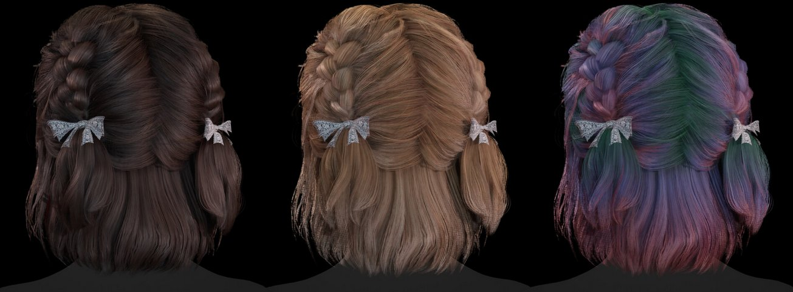

Overview¶
 Art by Ellinor Morén
Hair Tool provides a set of tools for various hair related tasks, including but not limited to:
- procedural or manual modeling,
- multiple ways to generate hair: Shell Hair, Short or Long hair generators, etc
- Automated UVs management,
- texture baking for hair cards,
- Selection Groups for saving and loading hair selections,
- Hair Drawing with option to extend multiple strands at once,
- Hair Presets for Deformers, Hair Systems so you can save and reuse your favorite setups,
- Hair Library with 30+ of ready to use hairstyles and sub-components,
- Hair Animation,
and more.
In procedural workflow Hair Tool uses a three main, geometry-nodes based, modifiers to create and manage hair on 3D models:
- A Setup modifier where base mesh and guide curve are connected,
- One or more Hair Systems, each made from stack of Deformers (nodes inside that modifier) where strands are generated and modified (deformed),
- A Hair Profile where hair curves are meshed, UVs and materials are assigned,
 You can attach a Hair System to either a mesh object (like a scalp) or a guide curve
You can attach a Hair System to either a mesh object (like a scalp) or a guide curve
Note: Shell Hair and Short Hair are not using Hair System workflow
Setup Section¶
In this section Guide Curve and Source Mesh are assigned to Hair System.
- Guide Curve: It's a greyed-out if your Hair System is already assigned to guide curve.
- Source Mesh: from which hair grows from, usually the scalp. It's also greyed-out if your hair system is already connected to it.
 In Image above Hair System is attached to guide curve punk_guide_curve (Green), and strands are spawned from Source Surface:
In Image above Hair System is attached to guide curve punk_guide_curve (Green), and strands are spawned from Source Surface: punk_base_mesh mesh
The Setup modifier enables you to transfer hair between objects, such as from a Base Mesh to a Guide Curve, using the Transfer Hair System button.
When you assign a Hair System to an object, this panel will automatically populate with the appropriate information.
Note: Setup modifiers is not always needed. For example Hair Drawing tool does not use it.
Hair Systems¶
Hair System is geometry-nodes based modifier where strands are generated and modified (deformed). Each Hair System modifier is made from stack of Deformers (nodes inside that modifier). First Deformer cannot be removed - it is always set to some kind of Strand Generator - see list below:
- Strand Generator - the basic generator that spawns strands from the base mesh, guided by hair curves,
- Strands From Mesh Elements - similar to Strand Generator, but spawns strands from specific mesh elements: vertices, edges, and/or faces,
- Strands from 2D UV Pattern - spawns strands in highly uniform preset patterns (grid, hex, etc.) based on the 2D UV layout of the base mesh,
- Strand Filter - does not generate new strands but can modify existing ones generated by a previous Hair System,
- Strand From Grid Surface - uses a grid mesh as a guide for strand generation,
- Strands from Prism Mesh - uses a prism mesh (e.g., cylinder or cone) to spawn strands at its base and guide them along its walls,
- Interpolated Strands - generates new strands between existing strands,
 Hair System list columns: Users Count | Name | Tag | Parent Tag | Visibility. First (Parent) and second (Child) system are linked together by Tag:
Hair System list columns: Users Count | Name | Tag | Parent Tag | Visibility. First (Parent) and second (Child) system are linked together by Tag: A, which allows Child system to use Parent Strands as 'input' for interpolation or other effects
 Above we have two Hair Systems:
Above we have two Hair Systems: Parent, Child. Child system is made from: Strand Generator, Noise, Clump, etc. Deformers. Fist system is guided by: HairCurve guide - see GUIDE tag.
Note: Similarly to Setup modifier, Hair Sub-Systems are optional - for example it is not used when drawing hair curves with Hair Drawing tool. But you can add them at any time to any curve by clicking [+] icon in Sub-System tab.
Hair Profile¶
Hair Profile is last modifier in Hair System stack. It is place where, not only hair profile is attached to curves, but UVs and Material is assigned too
Hair Tool will automatically add default UVs and Hair Material to hair system.

Note: Do not assign Material to hair object in Materials Tab - this won't work. Use Hair Profile panel instead.
 Hair Profile Panel with Curly Profile preset
Hair Profile Panel with Curly Profile preset
To add or edit curve profile, use Ctrl+Shift+H pie menu -> click 'Add (Update) Profile'.